表題の通りですが、レザークラフトしてきました。
都立大前に立地しているMakersBaseというお店で、カードケースを作るワークショップに参加しました。
なぜ、レザークラフトかというと、社会人になってからプログラミングに費やす時間以外に、これと言った趣味も特に無く、話題に困ることが多いので始めました。
キモくてごめんなさい。
ゆくゆくは、バックとかも自分で作れるようになりたいです。
Makers Baseについて
駅から2~3分で着く立地でした。
6Fのビルからなり、それぞれフロアで異なる機能を持っています。
例えば、地下一階は木工スペース、3Fは金工が出来るスペースになっています。
レザークラフトは4Fの縫製スペースで行いました。
ワークショップ以外の利用は会員制になっていて、安全講習ツアーに参加する事で会員になる事が出来ます。
下記は、館内の写真・館内に展示しているワークショップで作成された商品の写真です。
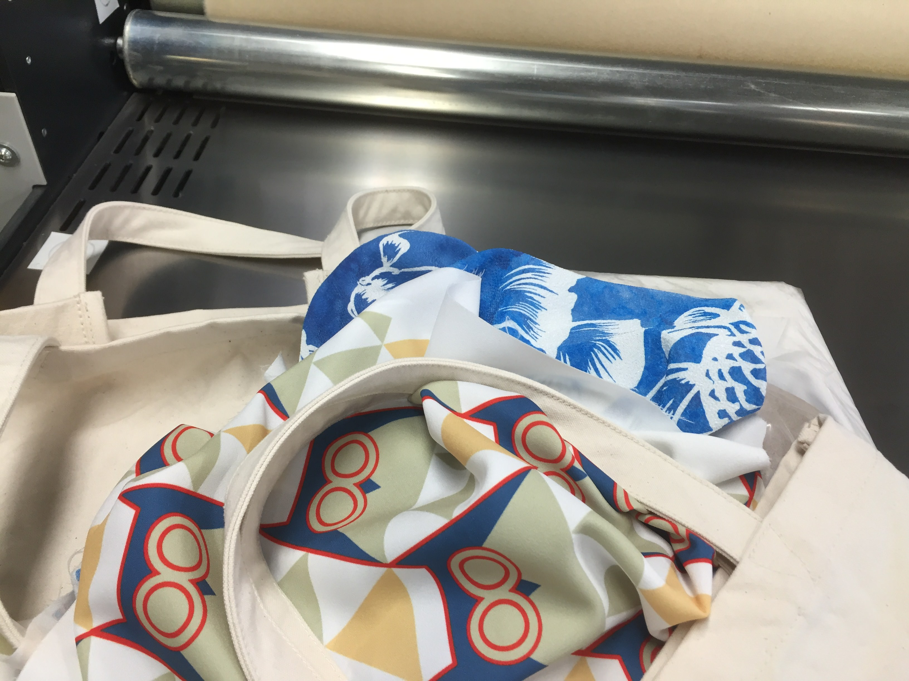
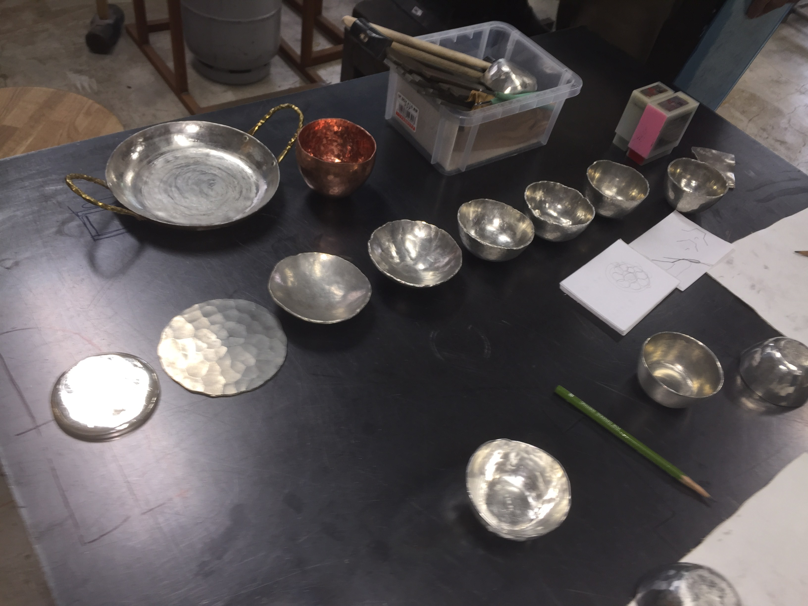
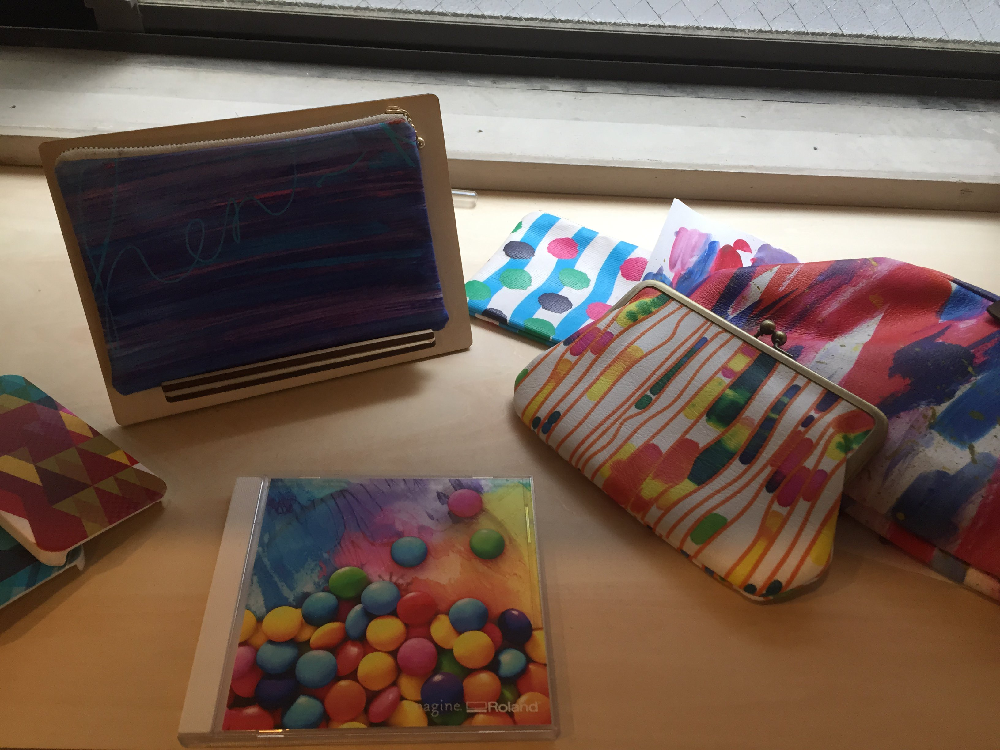
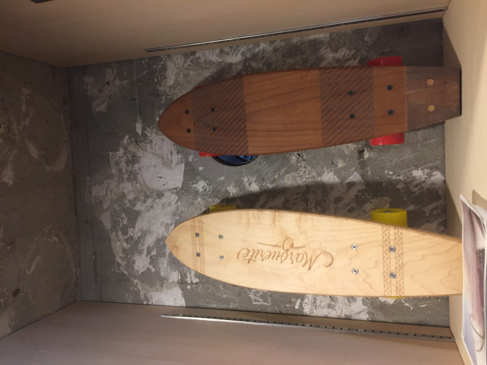
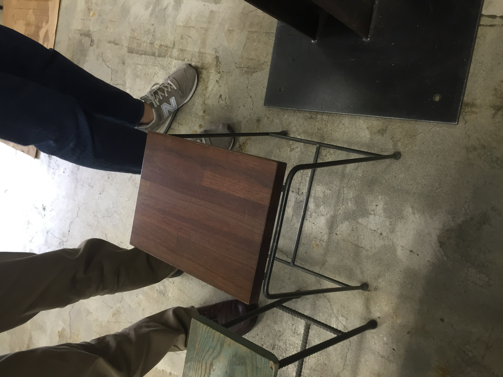
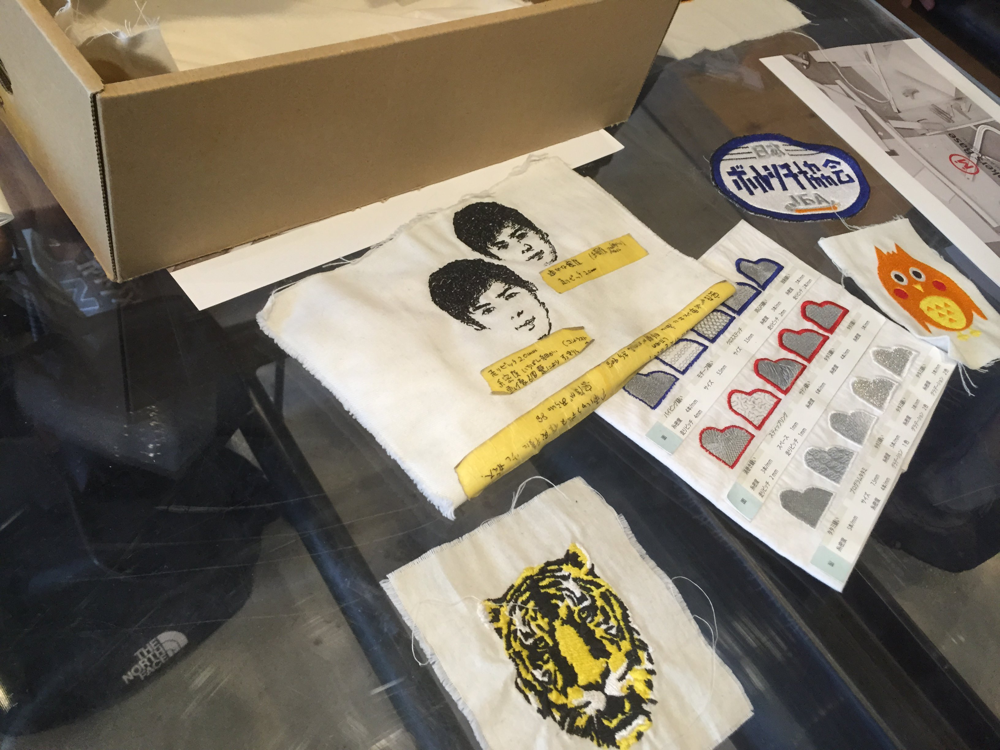
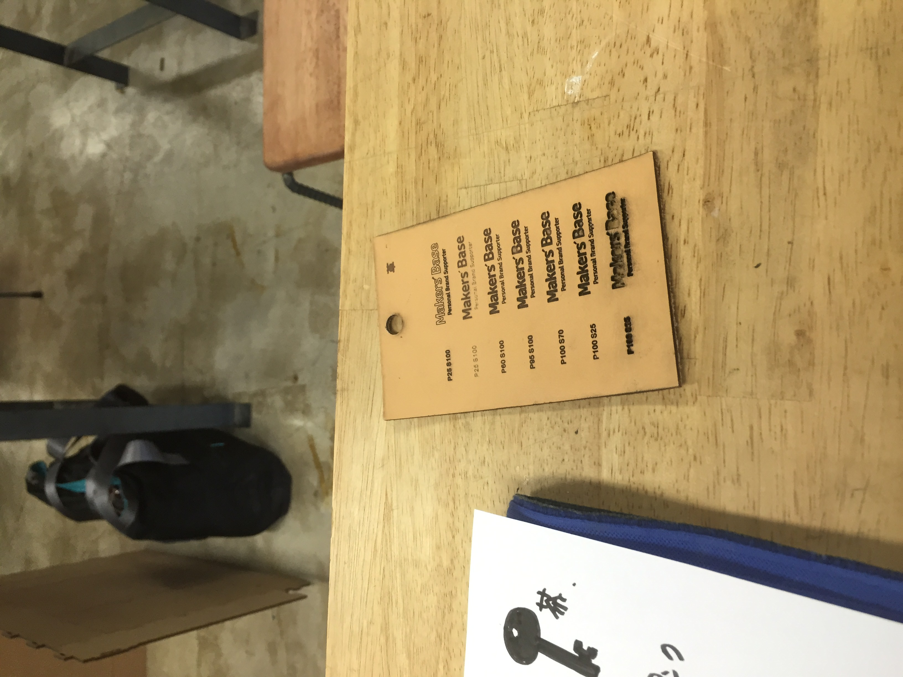
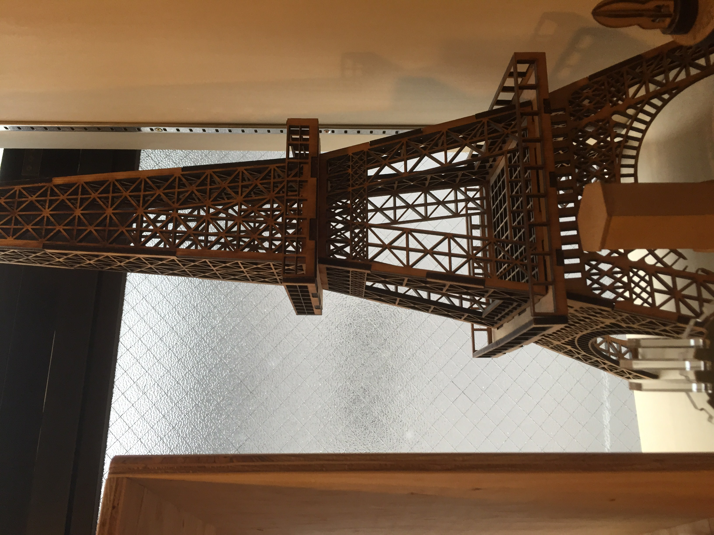
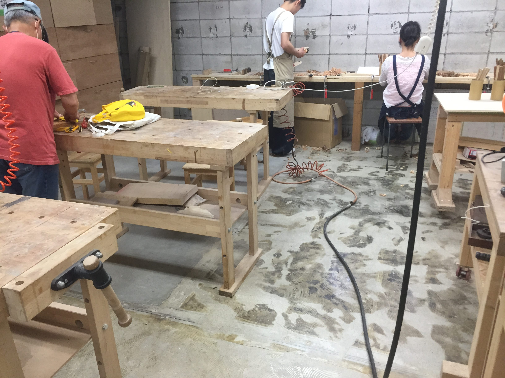
見てるだけでワクワクしちゃいますね！
色々、妄想も膨らみます(๑ ´ ᴗ ` ๑)
カードケースつくったお
ワークショップは初心者向きなので、2~3時間で2点のシンプルなカードケースを作りました。
下記のような工程で作ります↓（工程は写真取ってませんでした；）
- 型紙に沿って革を切る
普通のカッターを使いましたが、1Fのレーザーカッターで幾何学的な模様でもきれいに切る事が出来るみたいです。
ちなみにレーザーカッターなどの機器を利用するには、別途、機器ごとに有料の講習を受ける必要があります。 - レーザープリンターで名前などを刻印
そのままですが、フォントや文字などを指定して、店員さんに刻印してもらいます。 - 折り畳む
専用の両面テープを内側に貼り、革を折り畳みます。
この時、ゴムハンマーでしっかりと折り目をつけます。 - 縫う時に糸を通す穴を空ける
まず、事前にステッチンググルーバーで、穴を空けるラインに傷をつけます。
そして、穴を空ける用の道具を用いて、穴を空けます。（そのまんま東）
木槌と菱目(ひしめ)打ちを使いました。 - 縫う
手縫いの場合、シニュー糸というロウがしみ込んだ糸を利用します。
専用のミシンもありますが、ミシンの場合はシニュー糸は使わないみたいです。
縫い方はこういう感じで、レーシングポニーという道具に跨がって縫います。 - 仕上げ
仕上げに、トコノールという塗料を側面などに塗っていき、毛羽立った部分をツルテカにします。
以上です。
完成品
下記は完成品です。
もう1点作りましたが、残念な仕上がりのため掲載しません_:(´ཀ`」 ∠):_
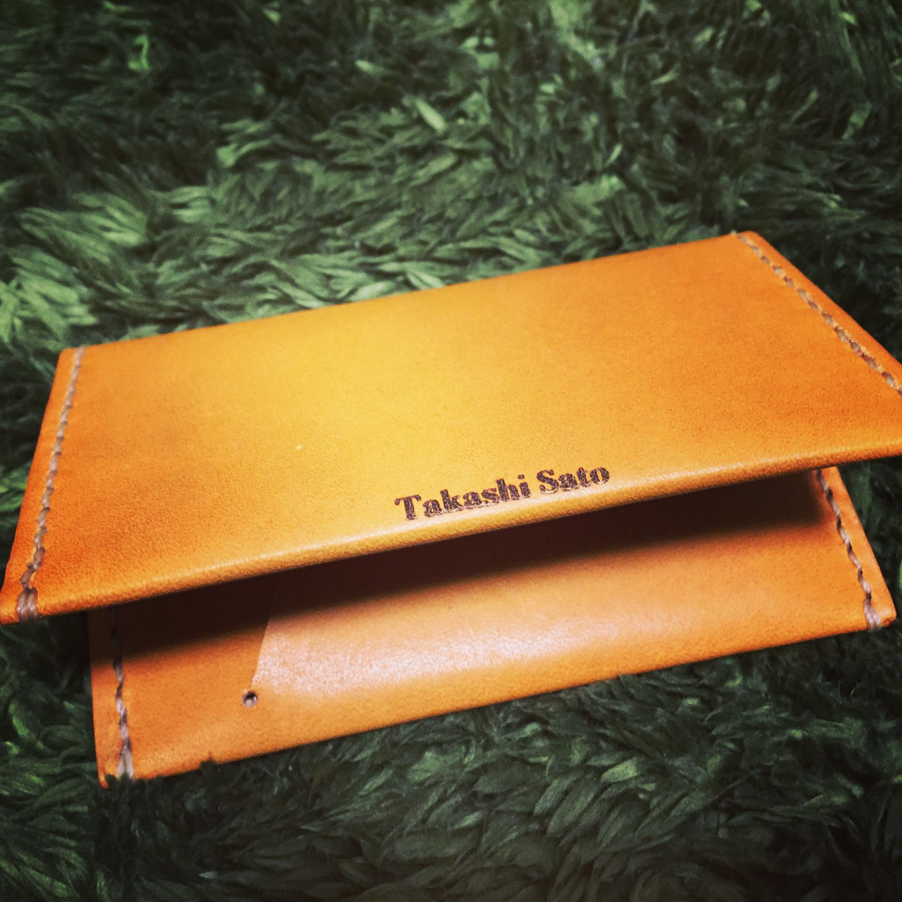
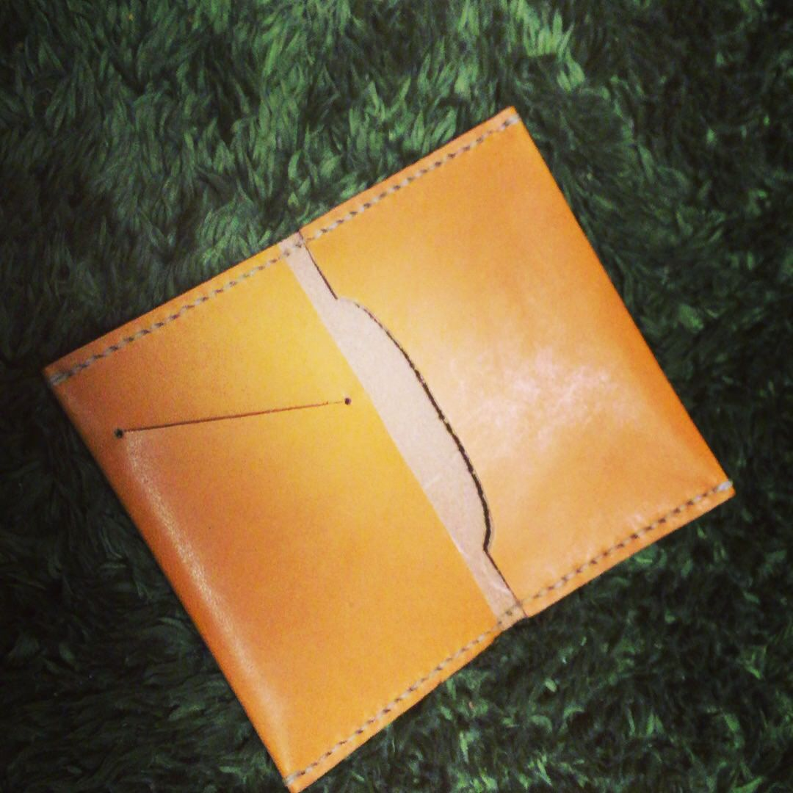
終わりに
プログラミングも同様ですが、ものづくりをしていると、時間を忘れて集中出来ます。
プログラミングも楽しいですが、趣味で小物や家具などを作るのは、また違った感覚でした。
久しぶりに優雅な休日を過ごした気分です。
お友達も増えそう。
1年くらいかけて、キーケース・スマホケース・バックなどの小物類を作りたいです。
少し広めのアパートに引っ越したら、家具とかも自分で作り、Tシャツとか藍染めしてみたり。
夢が広がりますね。
ありがとう、Makers Base。
なんだろう、このブログ。